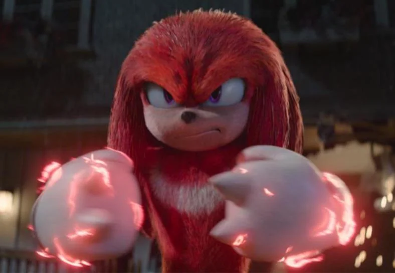

Sonic
Delantero centro, número 9
Ídolo del club por su velocidad y definición. Lidera el ataque con presión alta y remate letal.
Delantero centro, número 9
Ídolo del club por su velocidad y definición. Lidera el ataque con presión alta y remate letal.
Portero
Seguro bajo los tres palos y con reflejos increíbles. Ordena la defensa y salva partidos imposibles.

Defensa central
Fuerte en el juego aéreo y en el choque. Es el muro del equipo cuando toca proteger el área.

Mediocampista ofensivo
Creativo entre líneas, distribuye el juego y conecta defensa con ataque con visión y precisión.
Paso 5
Un club con historia, poder de convocatoria y una identidad que hace vibrar a Station Square.
Una institución acostumbrada a competir por lo más alto y a convertir cada temporada en una lucha por el título.
Un escenario imponente donde la presión del rival se siente desde la grada y cada partido se vive como una final.
Más que un equipo: una comunidad que sostiene una identidad esmeralda, orgullosa y profundamente futbolera.
Contenido del plantel...
Contenido de la historia...